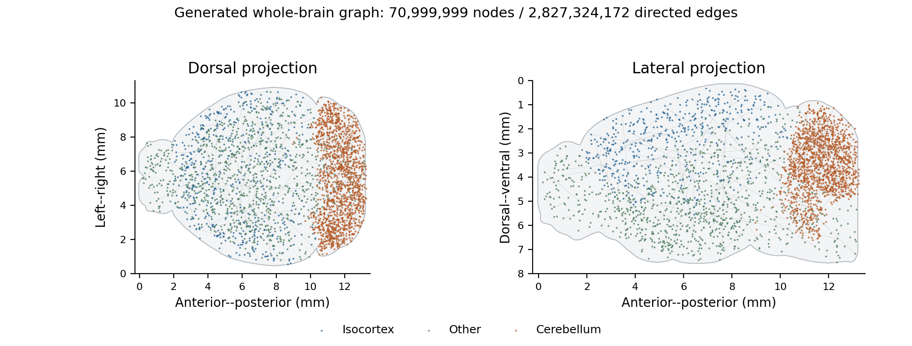

从连接结构到可检验的行为
果蝇连接组、全尺度模拟与闭环决策实验
从雄性果蝇连接组出发，研究合成网络的结构与动力学，再通过闭环任务、真实小鼠参照和对照实验检验模型行为。精确推理实验考察在保留固定控制器决策时，可以省去哪些计算。
行为实验
早期合成任务要求模型记住线索、选择左右，并用动作后的奖励更新读出。规则在第 800 次训练后反转。通用循环模型的平均奖励率在反转后前 100 次降至 11.0%，最后 100 次回升至 96.8%。改用 1 万节点图后，短延迟表现仍高，去掉循环边并保留单元泄漏后成绩几乎相同。
随后用 IBL 的刺激排程构造隐藏先验任务。模型依据当前感觉与自身过去的动作、奖励作答，奖励学习只更新读出，图内权重固定。三类循环图在十组新种子上约 84.6%；关闭历史输入路径后整体准确率下降 1.44–1.74 个百分点。复验沿用相同校准评估鼠。
同资源混合输入的小规模对照均值提升 1.82 个百分点，低于预设 3 个百分点门槛。后续五项架构优势比较均未达到完整判据，较简单的指数历史模型和双速率历史模型在主要弱证据指标上得分更高。
规则反转前后的奖励率
查看原图
双状态模型与五种对照
每项为十对种子的均值，单位为百分点。
弱证据准确率差
- 混合双状态
- +0.52
- 单状态
- +11.54
- 单状态加直接证据
- +2.15
- 单速率指数历史
- −1.98
- 双速率历史
- −3.40
感觉冲击的交互效应
- 混合双状态
- +0.09
- 单状态
- −0.17
- 单状态加直接证据
- +0.49
- 单速率指数历史
- +0.01
- 双速率历史
- +0.33

真实小鼠参照与开放评测
IBL 校准行为含 85 只小鼠、267 场会话和 172,342 次试验。匹配刺激对比度后，满足完整条件的 78 只小鼠区块偏好差为 18.20 个百分点，动物重采样 95% 区间为 16.30–20.47。最早切换后窗口仅 19 只合格，各窗口的覆盖差异限制了对适应速度的解释。
开源视觉模块 O0a、O0b 和 IBL 像素行为候选 B1 已完成各自的留出验证。B1 覆盖 27 只鼠、95 场会话；同一任务的 70M 单图十种子校准均值为 71.94%，其中九个种子低于 75% 门槛。
Allen 遗漏子实验在 6 只留出鼠上通过行为门，直接像素基线也通过。随后另一组 6 只鼠的 B2-local 候选得到 8.610/17 行为分，即使按未测神经分满分计，其总分上界仍只有 16.610/25。后续校准审计显示，整张图像身份留出后，低阶像素读出得到 20/40 场（50%）的准确率，全部判为熟悉。B3 的低成本短筛选未达到晋级门槛，完整规模干预未执行。最终测试继续封存。
真实小鼠在区块切换后的选择
查看原图
连接组、损毁与全尺度动力学
原始果蝇连接组库含 176,422 个神经元节点；早期报告的主要全图统计使用其中 165,122 个已追踪节点。结构部分还包括同规模生成对照、损毁敏感性、全尺度合成小鼠的基线核验，以及用 MICrONS 观测连接建立的局部模型。类型条件改善了部分连接统计，但距离误差和拓扑能力证据仍有限。
合成小鼠全图包含 70,999,999 个节点、2,827,324,172 条有向边。工程快慢状态运行推进 100 步，终态活动率 1.452%，峰值显存 5.633 GiB，并完成检查点恢复。后续混合动力学在约 1,370 万皮层节点引入局部校准的 VISp 风格动力学，非皮层仍运行工程模型。全量迁移和独立核验通过，证据覆盖模拟运行与数值重放。
全尺度小鼠图的背侧与侧面投影
查看原图
全量快慢动力学的活动轨迹
查看原图


固定循环网络的精确推理简化
感觉支路每轮重置，更新阶段数固定。只计算能传播到感觉读出位置的依赖，同时完整更新持续的历史状态。对 30 个检查点、183,630 个参考决策，五条替代实现逐次比较均无动作翻转；144 个通用数值案例也通过。
单线程受控计时中，在输入已压缩的条件下，依赖裁剪的配对中位加速为 1.46×。组合优化对优化后稠密参照为 1.61×，对原始内核为 4.08×。三个数字各有自己的比较基线。一般化图报告的是保留边贡献比例，计时结论来自固定任务案例。
另测了计划准备开销。十个距离图种子上，完整路径和裁剪路径的准备耗时中位数分别为 0.753 ms 和 0.871 ms；逐种子配对后的额外准备耗时中位数为 0.120 ms。十个种子的估计摊销点均为 1 个试次，采用同批完整运行的平均试次成本计算。


记录与数据
实验记录包括方法、已完成的测量、失败版本和对应的核验范围。记录按原实验时间保留，正文中的阶段计划会注明其当时状态。
截至此次更新，项目内没有记录到已运行的果蝇气味条件反射实验。真实动物数据用于行为参照与评分，本项目的闭环轨迹由模型产生。